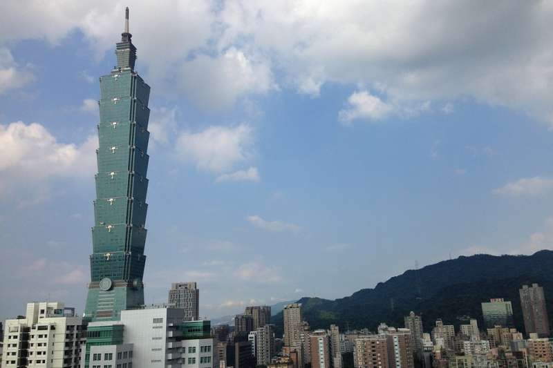

誰說台北只能逛街、喝咖啡？北部5處值得輕旅行的好地方，快加入你的旅遊清單吧！
一、象山登山步道
位於信義區的象山登山步道，因外形似象頭而得名，海拔高度只有183公尺，對於登山入門者是非常棒的選擇，登山途中，步道兩側皆有設置解說牌讓大家了解各種植物的類型，走到步道盡頭時，可以看見象山上著名的六巨石，從這裡攀上巨石便可將台北盆地繁華景象一覽無遺。 除此之外，象山最著名的就是，無論是清晨、正午、黃昏亦或是夜晚都有各自不一樣的景緻，當中最吸引人的還是夕陽餘暉染紅整片台北市的景象，伴隨著高樓大廈逐漸點亮燈火，可是吸引了不少攝影迷到此朝聖！ 小編還要告訴大家，象山登山步道中的觀景平台是觀賞101跨年煙火的好地點，但如果要上山看煙火的朋友們，記得要提早卡位唷！ 地址｜可搭乘捷運淡水信義線至象山站二號出口，沿指標前進即到達